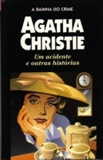

Um Acidente e Outras Histórias
The Accident and Other Stories
Autora de mais de 80 livros, Agatha Christie se notabilizou por sua capacidade incomum de criar enigmas humanos aparentemente indecifráveis. Um Acidente e Outras Histórias traz nove dos melhores contos da chamada “rainha do crime”. Algumas destas histórias são protagonizadas por três dos mais famosos personagens da autora: o genial e arrogante detetive belga Hercule Poirot, a sagaz solteirona Miss Marple e o “especialista em infelicidade” Parker Pyne.